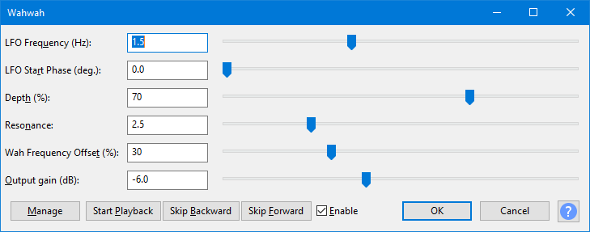

Wahwah
- Accessed by:
- 
{kind=link}
| The output from this effect may have higher amplitude than the original audio. If the output exceeds 0 dB (full track height) and so triggers the red clipping warning lights in the Playback Meter, you should open , ensure "Amplification (dB)" shows a negative dB value (not "0.0 dB") then click .
If "Amplification (dB)" in Amplify shows "0.0 dB", the track does not contain 32-bit audio and the clipping cannot be repaired. In that case, Wahwah, use Amplify to reduce the track to a lower amplitude then reapply Wahwah. |
LFO Frequency
Sets the speed at which the bandpass filter is swept back and forth.
LFO Start Phase
The start position of the LFO cycle. This determines whether the bandpass filter starts at its lowest, mid or highest frequencies. Another way to look at it is that it determines whether at the start of the effect the pitch is rising or falling.
Depth
Determines the range of frequencies that are swept through by the bandpass filter. Higher values will sweep the filter to higher frequencies and so give more variation to the sound quality over a complete LFO cycle. Lower values will give a more constant sound effect.
Resonance
Determines the degree of resonance in the bandpass filter. Higher values give a more "peaky" effect.
Wah Frequency Offset
Determines the "base" frequency of the bandpass filter. Higher values will shift the filter's frequency range upwards. To achieve a Wah effect that's in the low frequencies the frequency offset needs to be set to a low value.
Output gain (dB)
Controls the amount of gain (volume) positive or negative that will be applied by the effect.
Real-time preview
This effect supports Real-time preview - effect settings can be changed while playing and listening to the result in real-time. Text-based button controls are provided as in the image above. The Enable checkbox acts like a live "Bypass" control. Uncheck the checkbox  Enable to hear the audio without the effect applied, and recheck the box
Enable to hear the audio without the effect applied, and recheck the box  Enable to hear the effect applied at its current settings.
Enable to hear the effect applied at its current settings.
The button accesses choices to add, delete, import or export presets for this effect and to set options for this effect. For details see Manage presets.
Buttons
Clicking on the command buttons give the following results:
- gives a dropdown menu enabling you to manage presets for the tool and to see some detail about the tool. For details see Manage presets.
- starts playback of the effect preview
- skips forward through the effect preview
- skips forward through the effect preview
-
 Enable listen to the preview with and without the effect applied
Enable listen to the preview with and without the effect applied - applies the effect to the selected audio with the current effect settings.
- aborts the effect and leaves the audio unchanged.
 brings you to the appropriate page in the Manual, this page.
brings you to the appropriate page in the Manual, this page.